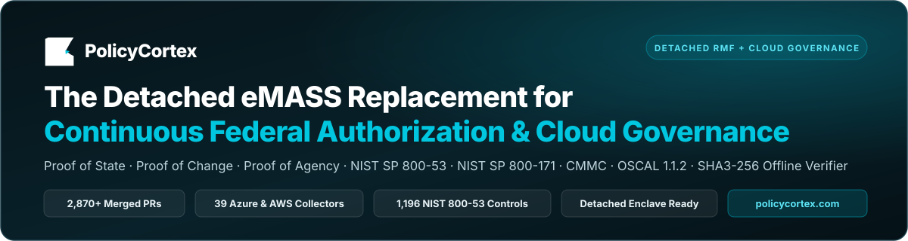
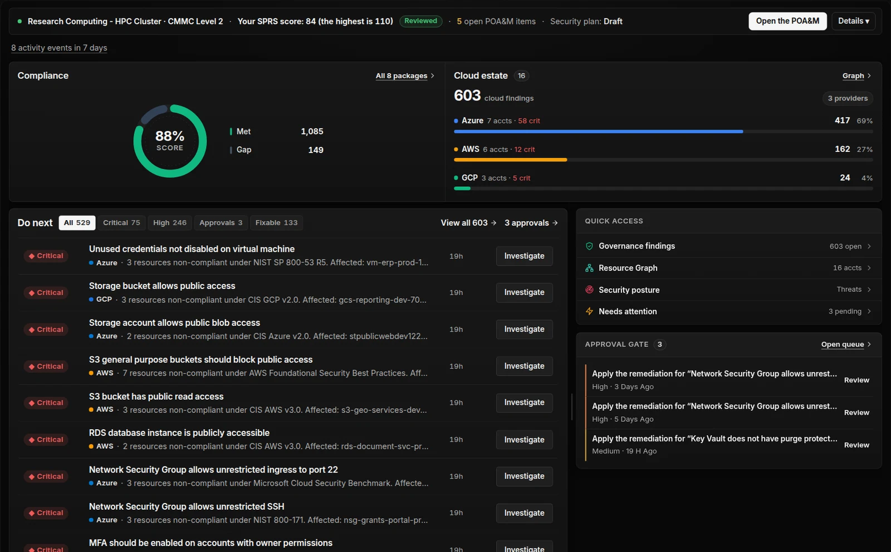
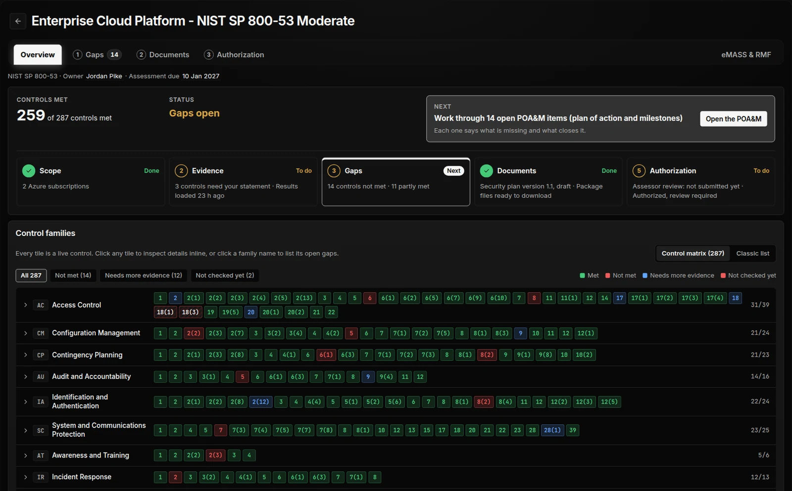
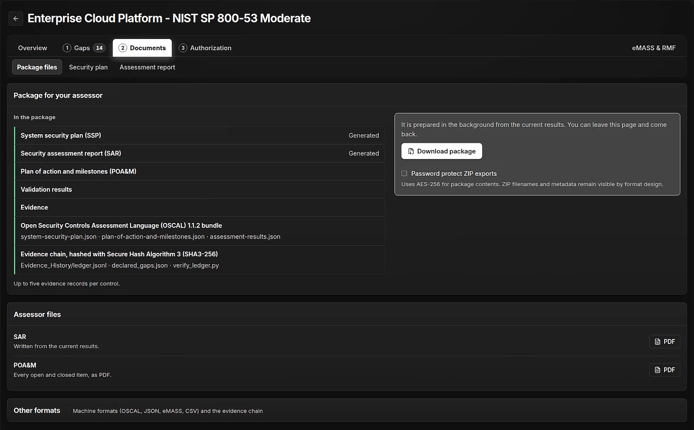

PolicyCortex · Founder · github.com/PolicyCortex · LinkedIn · esere@policycortex.com
Texas, USA · Prove the mechanism instead of asking for trust.


|
Unified Multi-Cloud Governance & Command Center Live Azure, AWS, and GCP findings, live SPRS readiness, and human-gated remediation approvals in one cockpit.  |
eMASS & RMF 287-Control Readiness Workspace 5-stage RMF readiness rail (Scope, Evidence, Gaps, Documents, Authorization) and live interactive NIST SP 800-53 matrix.  |
|
Assessor-Ready Package Export & Offline SHA3-256 Evidence Chain Every exported ATO package bundles SSP, SAR, POA&M, OSCAL 1.1.2 JSON, eMASS formats, and an offline Python verifier so any authorizing official or assessor can independently recompute the hash chain with no PolicyCortex account.  |
|